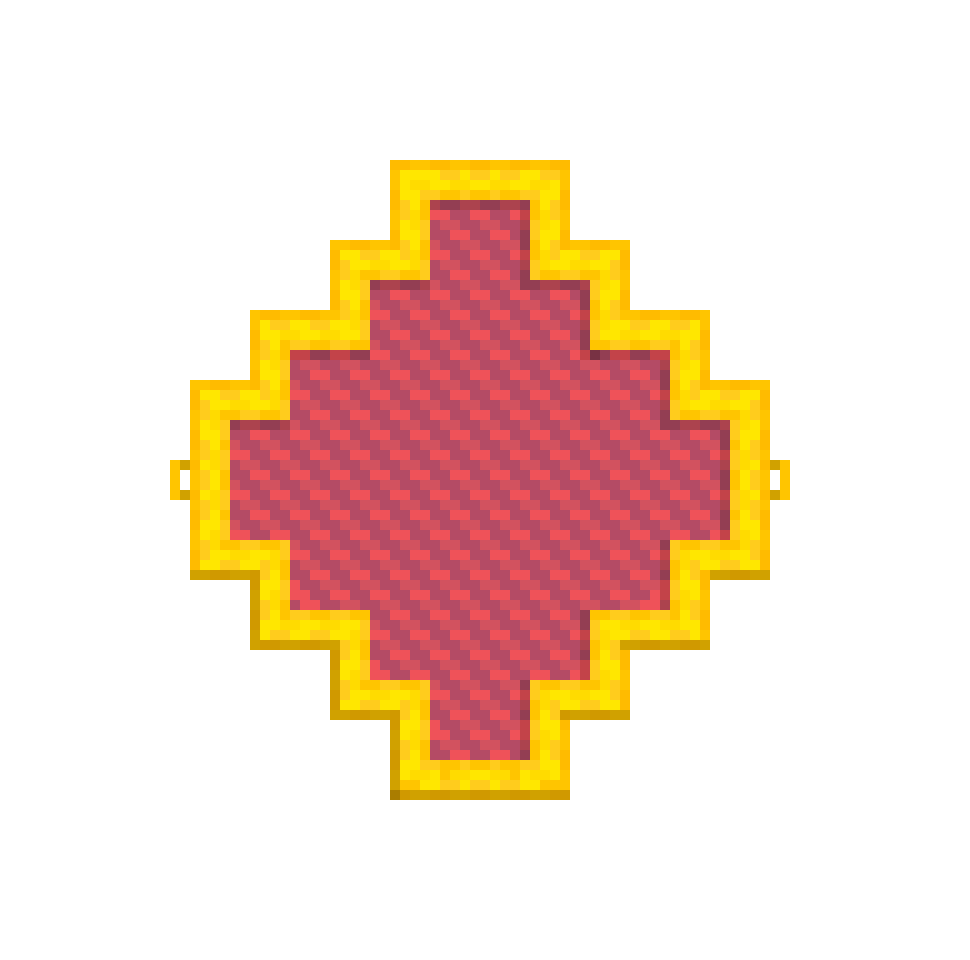

09_Welandes
The old ways of being, affronted by a changing world, yearn for attention.
You, the storyteller, weave the tapestry. The Wanderer, cast asunder, seeks his wyrd.
Wayland, the Anglo-Saxon god of smithing, aids your journey... for a cost.
Leave behind the fire and brimstone of steel, and find the power of language.
Find your words, and you find your wyrd.
